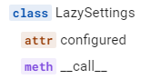
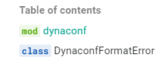

Auto-generating package API with mkdocstrings
Whenever I land on a new Python package docs these days, the docs tend to be built with
mkdocs and the mkdocs-material theme, heralding a bit of a
departure from the era of the Sphinx.
It's true, Sphinx still remains very popular and is endlessly extensible through its directives
feature and its many plugins, but there is something about the beauty of mkdocs-material, its ease
of deployment and its richness in features that makes it such a popular choice right now.
Not to forget the simplicity of writing content in markdown which is very widely understood.
All good reasons why I started this blog with mkdocs-material!
One thing that Sphinx does very well is autogenerating your project's API using the information
present in docstrings. This doesn't come out of the box with mkdocs, but can be enabled with the
plugin mkdocstrings which has some great features.
The main usage of mkdocstrings seems to be centred around
the concept of inline injection, but I wanted to test out their automatic API docs generation
feature which they provide a recipe for here.
Setting up
So there's not too much too it - only 4 steps:
-
Add and install the docs dependencies
-
Add these plugin details to
mkdocs.yml -
Add the reference section to the navigation settings in
mkdocs.yml -
Add the
gen_ref_pages.pyscript to thescripts/folder at the top level
Trying it out
To test this out I created a dummy package, and for a bit of fun I centred it on a Gandalf class 🧙♂️.
The Gandalf Class
"""Defines the main Gandalf class."""
from typing import Literal, get_args
from .utils import Mount
WEAPONS = Literal["Glamdring", "Narya", "Staff"]
COLOURS = Literal["white", "grey"]
class Gandalf:
"""A Gandalf class.
Attributes:
colour: The colour of Gandalf's robes. Defaults to 'grey'.
"""
colour: str = "grey"
def __init__(self, weapon: WEAPONS = "Staff"):
"""Initialises Gandalf.
Attributes:
weapon: The weapon that Gandalf wields, defaults to 'Staff'.
mount: Gandalf's current steed, defaults to None.
"""
self._weapon = weapon
self._mount = None
@classmethod
def set_colour(cls, colour: COLOURS):
"""Set Gandalf's colour."""
if colour not in get_args(COLOURS):
raise ImproperGandalfColourError
cls.colour = colour
@property
def weapon(self):
"""The weapon property."""
return self._weapon
@weapon.setter
def weapon(self, weapon: WEAPONS):
"""Setter for the weapon property."""
if weapon not in get_args(WEAPONS):
raise WrongWeaponError
self._weapon = weapon
@property
def mount(self):
"""Gandalf's mount."""
return self._mount
@mount.setter
def mount(self, mount: Mount):
"""Setter for the mount property."""
self._mount = mount
def deny(self, verb: str) -> None:
"""Shout a denial of a doing word.
Args:
verb: An action word to deny someone of.
"""
if not self.weapon == "Staff":
raise NeedStaffToDenyError("Gandalf doesn't have weapon set to 'Staff'.")
print(f"YOU SHALL NOT {verb.upper()}!!!")
def travel(self) -> None:
"""Ride mount to destination."""
if not self.mount:
raise NoMountSetError("Gandalf needs a mount to travel.")
self.mount.ride()
class NoMountSetError(Exception):
"""Raise when no mount is set for Gandalf.."""
class NeedStaffToDenyError(Exception):
"""Raise when Gandalf tries to deny without his staff."""
class ImproperGandalfColourError(Exception):
"""Raise when user tries to set Gandalf to the wrong colour."""
class WrongWeaponError(Exception):
"""Raise when user tries to set a wrong weapon for Gandalf."""
def __str__(self):
return f"Chosen weapon must be one of {get_args(WEAPONS)}"
if __name__ == "__main__":
gandalf = Gandalf()
gandalf.deny("glamp")
gandalf.weapon = "Glamdring"
gandalf.deny("pass")
I devised a few rules around setting Gandalf's weapon and his mount. And I gave him two methods for things that he absolutely loves to do:
- deny (because Gandalf loves telling you that you shall not do something)
- travel (because he gets about the map blimming fast)

I tried to use a variety of different techniques to see how they generated in the autodocs, such as methods, properties and class methods.
I also created two classes with parent ABC Mount in the utils.py, one for ShadowFax and one for
the big eagle that comes to his aid.
Gandalf's utils
"""Some Gandalf utils."""
from abc import ABC, abstractmethod
class Mount(ABC):
"""A mount for Gandalf."""
@staticmethod
@abstractmethod
def ride() -> None:
"""Ride the mount."""
class Shadowfax(Mount):
"""A fast white pony."""
@staticmethod
def ride():
print("WEEEEEE!")
class Gwaihir(Mount):
"""A great big f**king eagle."""
@staticmethod
def ride():
print("Whoooooooooosh")
So now that we have our watertight Gandalf API, we can see how the docs look once generated.
Doing it for real
I noticed an open issue on the Dynaconf GitHub
page which was tagged as a good first issue. They had migrated over to mkdocs-material
but they hadn't yet enabled any autogeneration of their API docs. It was present on their old
docs but not on their new
docs.
What they needed was for mkdocstrings to be setup and some tuning to present their API reference
as they wanted. I'm not a frequent contributor to open-source but this seemed simple enough that I
could do it and also a decent opportunity to learn something, so I started prepping the demo
run and offered to give it a go.
Before the maintainers could reply to my offer, I went gun-ho and made a first attempt to build the
API reference using the same automated recipe that I'd attempted on my dummy API. However, there was
a slight difference in the project structure of the dynaconf project that meant a few changes were
needed; the gen_ref_pages.py script assumes the following structure:
... but dyanconf doesn't have the src/ folder:
This requires the following changes to the gen_ref_pages.py script:
- Define project
rootandsrcas different variables. - Glob the py files from
src - Define
module_pathanddoc_pathrelative toroot. - Resolve relative paths - see warning below.
- Resolve relative paths - see warning below.
Warning
If the relative paths were not resolved, the mkdocs-gen-files plugin seemed to place the files
outside of the project folder. This caused the mkdocs-git-revision-date-plugin used by
dynaconf to throw git errors.
These changes allowed the full API reference to be built successfully, and it looked like this in the docs:
{kind=link}
Simplifying it
After going gun-ho and generating the full API for every single module, I had some feedback from the maintainers that it was preferred not to have all these modules generated as many of them do not contain public facing API. Time to scale it back.
One thing I noticed was that at the top dynaconf level in the reference, it actually
auto-generated everything that was present in the top level API that was defined in the
__init__.py:
__all__ = [
"Dynaconf",
"LazySettings",
"Validator",
"FlaskDynaconf",
"ValidationError",
"DjangoDynaconf",
"add_converter",
"inspect_settings",
"get_history",
"DynaconfFormatError",
"DynaconfParseError",
]
Note
It only includes what has been set in the __all__ property, not everything that is imported
into __init__.py.
With that in mind, we can potentially do away with the recursive generation of sub-modules since in this case we are only interested in exposing the top level API. And therefore the only two steps needed are:
- Create a new markdown file in the docs with the following:
- And add the section to the navigation in
mkdocs.yml
We end up with a much more simple solution which does the job well and shows off the awesome power
of the mkdocstrings plugin!
To get the API docs looking super nice, there's a couple of extra settings that were added in this case:
plugins:
- mkdocstrings:
handlers:
python:
options:
show_symbol_type_heading: true # (1)!
show_symbol_type_toc: true # (2)!
show_root_toc_entry: false # (3)!
show_object_full_path: true # (4)!
- Adds the
classsymbol in front of the object:
- Adds symbols to the table of contents: 
- Removes the module from the top of the toc - it doesn't correspond to anything on the page: 
- Adds the full dot path to the object:
{kind=link}
{kind=link}
Further CSS customisation was added for the Material theme, as recommended in the mkdocstrings
docs. I put the CSS in docs/stylesheets/mkdocstrings.css and added
the following to mkdocs.yml:
With that all done my PR was approved and merged 🦾 and the resulting docs can be previewed here.
There are a few improvements to be made to the docstrings themselves but that's for another time.
Anyway, I hope you enjoyed my first post and I hope you have the confidence to go and give
mdocstrings a go in your own projects.